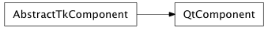
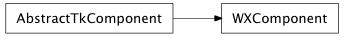

Bases: enaml.widgets.base_component.BaseComponent
A BaseComponent subclass that adds support for a toolkit specific abstract object. This class represents the most basic widget in Enaml that drives a gui toolkit widget.
Whether or not the widget is enabled.
Whether or not the widget is visible.
A property which returns whether or not this component is currently frozen.
A read-only property that returns the toolkit specific widget being managed by the abstract widget.
The toolkit specific object that implements the behavior of this component and manages the gui toolkit object. Subclasses should redefine this trait to specify the specialized type of abstract_obj that is accepted.
Overridden parent class destruction method method that adds additional logic to destroy the underlying toolkit widget.
The destruction happens in dual pass top-down, then bottom-up. On the top-down pass, the traits listeners for the abstract obj are unhooked so that no events get fired during destruction. On the bottom up pass, the abstract obj is destroyed and its ref set to None.
Set the visibility of the component according to the given boolean. Subclasses that need more control over visibility changes should reimplement this method.
Disables rendering updates for the underlying widget.
Enables rendering updates for the underlying widget.
A context manager which disables rendering updates on enter and restores them on exit. The context can be safetly nested.
alias of __NoInterface__

Bases: enaml.widgets.component.AbstractTkComponent
Base component object for the Qt based backend.
The Qt widget created by the component
Creates the underlying Qt widget. As necessary, subclasses should reimplement this method to create different types of widgets.
Bind any event/signal handlers for the Qt Widget. By default, this is a no-op. Subclasses should reimplement this method as necessary to bind any widget event handlers or signals.
Destroys the underlying Qt widget.
A property which gets a sets a reference (stored weakly) to the shell object
Disable rendering updates for the underlying Qt widget.
Enable rendering updates for the underlying Wx widget.

Bases: enaml.widgets.component.AbstractTkComponent
Base component object for the Wx based backend.
The Wx widget created by the component
Create the underlying Wx widget. As necessary, subclasses should reimplement this method to create different types of widgets.
Bind any event handlers for the Wx Widget. By default, this is a no-op. Subclasses should reimplement this method as necessary to bind any widget event handlers or signals.
Destroy the underlying Wx widget.
A property which gets a sets a reference (stored weakly) to the shell object
Disable rendering updates for the underlying Wx widget.
Enable rendering updates for the underlying Wx widget.